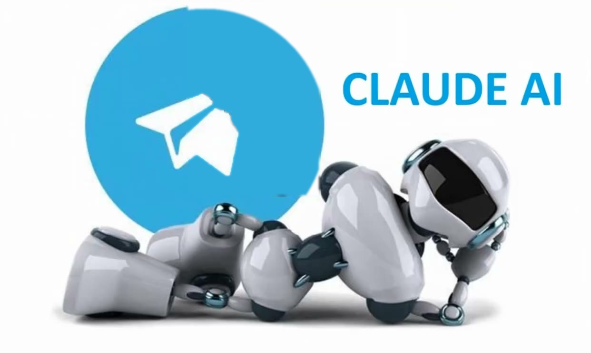
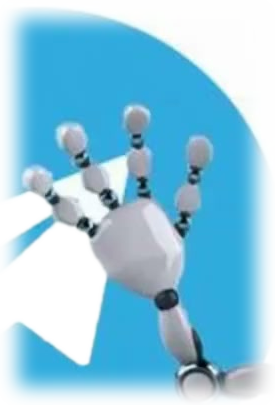

Превью v3: картинка робота растянута на всю площадь карточки (cover, без искажений пропорций) — было: пустые поля по бокам


AI Studio
AI Teacher Bot — обучение Claude
65 уроков в Telegram: от первого диалога с ИИ до мультиагентных систем
v3: картинка теперь заполняет всю карточку по ширине (cover), лишнее сверху/снизу обрезается по центру — без искажения пропорций (не stretch). Голова, рука, значок TG остаются в кадре. Анимация (взмах руки + искры глаз) — без изменений от v2.